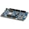
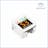

Things used in this project
Hardware components |
|
|  | Nordic Semiconductor nRF52 Development Kit |
|  | M5Stack AtomS3 |

|
Seeed Studio XIAO ESP32S3 Sense |

|
DFRobot UNIHIKER - IoT Python Programming Single Board Computer with Touchscreen |
Software apps and online services |
|
| CircuitPython | |
Hand tools and fabrication machines |
|

|
3D Printer (generic) |
Story
Improved Motion Control
My goal for the BUILD2GETHER 2.0 was to make a device with customisable motion and I succeeded!
This device can be tailored to the user, whether it be someone who suffers from tremors or has limited dexterity.
Some the the Examples are:
- The minimum motion can be set to ignore any spasms or tremors, by setting the increments for motion.
- The minimum and maximum values can be set to choose how much motion to register or set the maximum movement speed when gaming or controlling a motorised chair.
- The deadband option allow you to specify the movement required to start registering. This can also be use in combination with the min/max to use the joystick like a direction pad and only register movement at the extremes.
My Process
The first thing I researched was the best hardware solution to make this device work well and be scalable. After extensive research I decided that the nrf52 devices would have the best battery life and the ESP32 is the most common, so I decided to make my solution non hardware specific. I set out to find the most adaptable coding language and decided on CircuitPython . It is easily customisable, you can find libraries for most hardware and they are easy to add.
I spent about 4 hours, over 2 days figuring out how to add CircuitPython to the Nordic Semiconductor's nRF52840 DK
https://learn.adafruit.com/circuitpython-on-the-nrf52?view=all
Once I had that working, I tested several libraries to decide on the controls and landed on the JoystickXL library because you can add multiple controls and program how they work.
https://github.com/fasteddy516/CircuitPython_JoystickXL
I then proceeded to get the 6-Axis IMU Unit(MPU6886) working as a joystick and how to customise the reactions.
My aim was to allow for the following motion option customisations:
- Sampling Rate (Delay) - Allows for setting how often to take movements and remove jitter.
- Range of Motion (Distance) - Using a minimum and maximum value allowed the range of motion to be defined.
- Dead Band (Zero Center Range) - This is used to set how far from the middle movement is needed to start registering.
- Minimum Change (Delta) - This was the most useful setting! It allows the user to set how smooth the motion is, based on the registered increments.
- Relative Motion (Standard Joystick) or Change in Motion (Only move based on force in a direction)
- D-Pad or Hat Motion (Extremes only and would act like a D-Pad)
Ultimate goal would be to be able to predict motion, based on previous interactions and allow the user to only need to specify changes or other motions.
I also connected an I2C Thumbstick joystick to experiment with the customisations and prove the ability to add unique customisations. The code detects the thumbstick and includes it as additional axis. The thumbstick button is also added.
Next was a simple interface to change the customisations. I opted to switch to the ESP32S3 as this allows for a HTML interface to be set up.
I set the ESP32S3 into AP mode, so the device can be connected to anyware and reprogrammed.
The connection credential are:
SSID: MC
Password: 'helpmemove'
Then you just need to browse to 192.168.4.1:5000 , as shown on the display:
As suggested by the contest master for the BUILD2GETHER 2.0 competition, I also worked on designs for mounting the devices to a wheelchair and attachments for limbs, with the ability to got between.
I also experimented with the XIAO ESP32S3 + Grove Shield because you can add lots of options with the big shield. The onboard camera could also be used for face or object tracking, as an added function.
Conclusion
Any of these devices could be used to interact with smart home devices or other helpful things, like adjusting settings on wheelchairs. The code has been written in CircuitPython , so lots of libraries are available. This device could also be paired with a Raspberry Pi , running NodeRed or openHAB to trigger any actions imaginable!
Custom parts and enclosures
Schematics
DFRobot Unihiker